Թեստ 17
30:00
1. «Ճանապարհային երթևեկության անվտանգության ապահովման մասին» ՀՀ օրենքի համաձայն` ընդհանուր օգտագործման տրանսպորտային միջոց է համարվում`
2. «Ճանապարհային երթևեկության անվտանգության ապահովման մասին» ՀՀ օրենքի համաձայն` օրվա մութ ժամանակ է համարվում`
3. Տրանսպորտային միջոցների շահագործումն արգելվում է, եթե`
4. Տրանսպորտային միջոցների շահագործումն արգելվում է, եթե
5. Ճանապարհային նշանների, գծանշման և բաժանարար գոտու բացակայության դեպքում վարորդները երկկողմ երթևեկությամբ ճանապարհների երթևեկելի մասում գտնվող ճանապարհային կառույցների տարրերը պետք է շրջանցեն`
6. Այս նշանը կոչվում է`
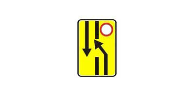
7. Տվյալ դեպքում պարտավո՞ր է վարորդը կանգ առնել կարգավորողի կողմից նշված տեղում:
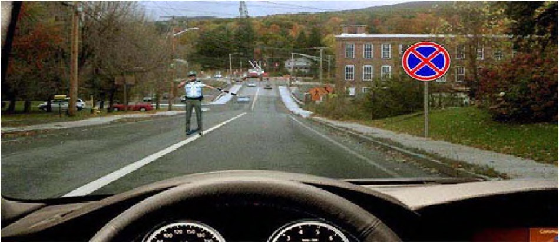
8. Ո՞ր տրանսպորտային միջոցը պետք է զիջի ճանապարհը:

9. Հետադարձը այս խաչմերուկում
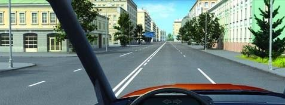
10. Հետադարձը նշված վայրում
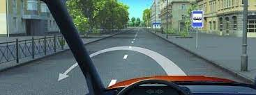
11. Սլաքներով նշվածներից ո՞ր ուղղությամբ կարելի է շարունակել քարշակումը
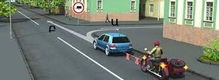
12. Այս իրադրությունում ձախ շրջադարձի ժամանակ պարտավոր ենք զիջել ճանապարհը
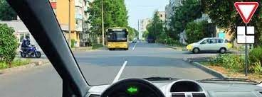
13. Ինչպե՞ս վարվել այս իրավիճակում
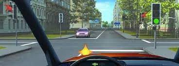
14. Ո՞ր ուղղությամբ կարող է վարորդը շարունակել երթևեկությունը:
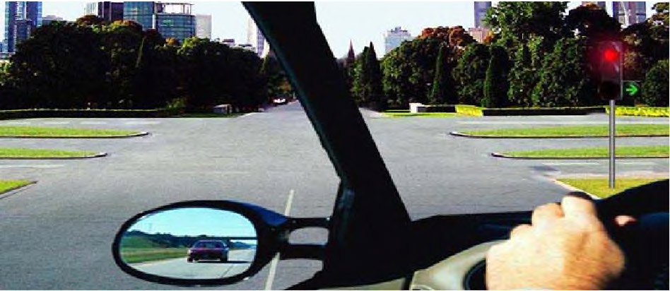
15. Զբոսաշրջային ավտոբուսի վարորդը երկարատև հանգստի նպատակով իրավունք ունի՞ կանգ առնել նշված վայրում:
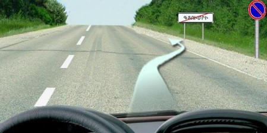
16. Ի՞նչ արագությամբ կարող է շարունակել երթևեկությունը ավտոբուսի վարորդը տվյալ ճանապարհային նշանով նշված գոտում:
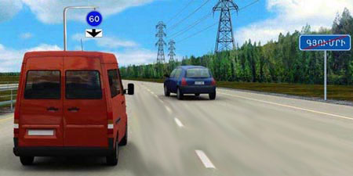
17. Ինչո՞վ պետք է ղեկավարվի վարորդը երկաթուղային գծանցին մոտենալիս:
18. Թույլատրվո՞ւմ է կանգառ կատարել նշված վայրում
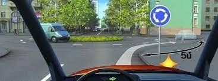